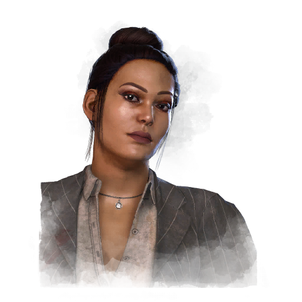

简·罗梅罗 Jane Romero
- 性别
- 女性
- 出身
- Latin American
- 演员
- Patricia Brochu-Gagné (BHVR)
背景故事
简·罗梅罗是著名女演员洛丽塔·劳伦斯的女儿，可她对母亲毫无记忆。她还在襒褓之中时父母便已分居，主要原因是母亲常年外出拍戏。简由父亲抚养长大——一位默默无名的视觉艺术家。她在怨恨母亲缺席自己人生的同时，又对她的银幕形象心存仰慕，逐渐陷入撕裂的成长之中。十几岁时，简偷偷梦想着效仿母亲的天赋：她导演并出演话剧、争取电视广告的试镜机会，也在父亲的工作室里帮忙打下手。高三那年，她参加全国演讲比赛并夺得第一名。她的表现引起了一家电台的注意，对方联系她做采访。在直播节目中，她那天生的亲和力与机敏应答打动了电台工作人员，于是他们向她提供了一份兼职工作。传播学专业毕业后，她辞去电台的工作，转而进入一档当红的综艺节目。然而，她直来直去的表达方式和临场加的即兴段子并不讨节目主管喜欢，五个月后她便被解雇了。简渴望另一个机会，于是跑到自己昔日任职的那家电台毛遂自荐，推出一个节目构想，却被对方以风险过高为由驳回。四个月后，她接到了一位制片人的电话，那人看过她那档节目的重播，正在为日渐冷落的《快言快语》寻找一位能炒热气氛的搭档主持人。电视直播意味着漫长的工时、微薄的薪水，以及朝不保昔的稳定性，但同时也给了她一个发声的平台。她决定——
专属技能
通用技能 任意逃生者均可使用
寻宝专家
Artefact Hunter
执念之缚
Bound by Obsession
黑暗感知
Dark Sense
坚持到底
Down to the Last
似曾相识
Déjà Vu
希望
Hope
同族
Kindred
最后站立
Last Standing
轻装上阵
Lightweight
不抛弃任何人
No One Left Behind
过度自信
Overconfidence
掠夺者直觉
Plunderer's Instinct
预兆
Premonition
韧性
Resilience
滑溜之躯
Slippery Meat
小猎手
Small Game
背脊发凉
Spine Chill
这不是真的
This Is Not Happening
硬跑者
Tough Runner
我们能行
We'll Make It
求生意志
Will to Live
附加品
- 暂无数据。